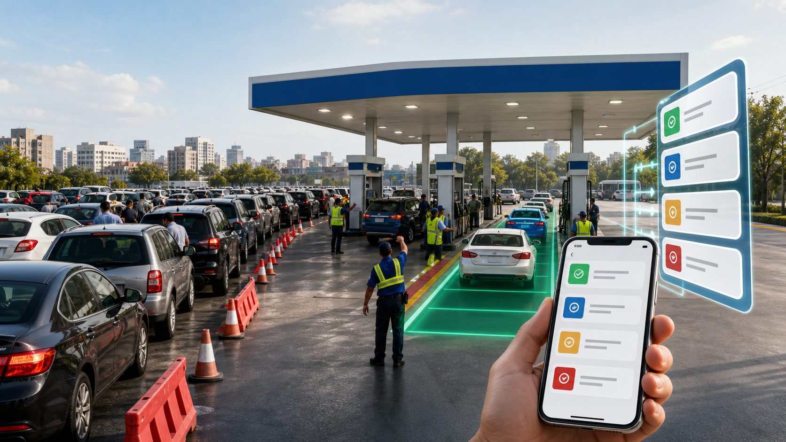

1
Создать лимит
Админ или старший смены задаёт дату, АЗС, виды топлива, лимит машин и литров.

Fuel Queue PWA
Мобильное приложение для записи автомобилей, проверки допуска, лимитов, фиксации заправки и прозрачной статистики по 3 АЗС.
Боль без системы
Как это работает
Админ или старший смены задаёт дату, АЗС, виды топлива, лимит машин и литров.
Оператор вводит госномер, ФИО, топливо, литры и получает номер записи.
Кассир вводит номер и сразу видит решение, причину и активную запись.
После отпуска топлива литры попадают в историю, отчёты и защиту от повтора.
Удобство на смене
Проверка по госномеру сокращает разговоры у окна кассы: причина допуска или отказа видна сразу, а спорная ситуация уходит старшему смены.
Контроль для администрации
Руководитель получает единый контур: сколько машин записано, сколько литров отпущено, где лимит заканчивается и какие решения были приняты вручную.
Главная ценность
Меньше ручного контроля, меньше конфликтов, меньше ошибок в лимитах. Больше прозрачности для сотрудников, руководителей и администрации.
Быстрая проверка, понятные статусы, минимум действий при фиксации заправки.
Единая очередь, отчёты по литрам, аудит действий и защита от повторных заправок.